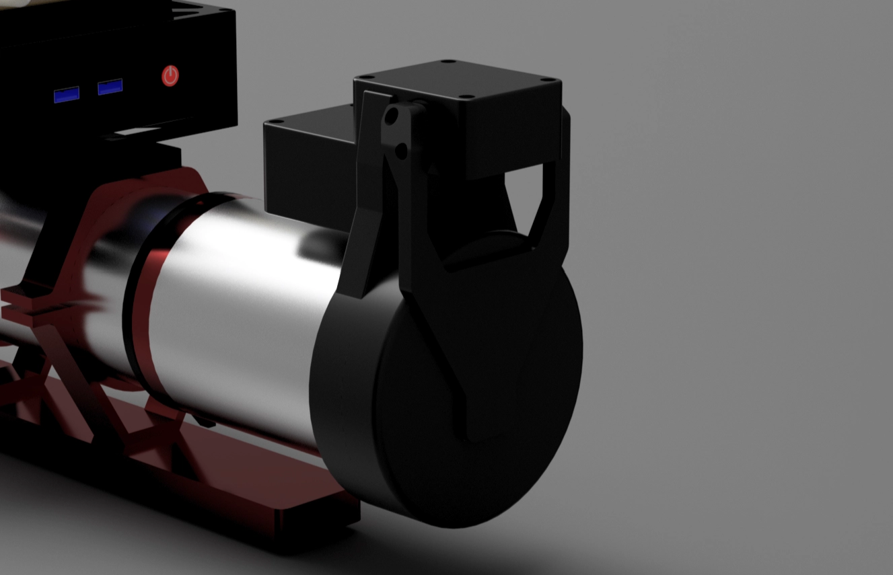
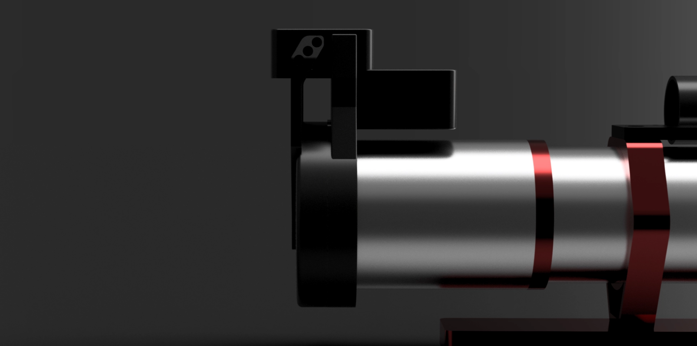

Motorized Flat Panel
Overview
Motorized flat panel for automated astrophotography flat frame capture
This motorized flat panel mounts on a telescope and automates flat frame capture.
The panel opens and closes automatically, controls brightness, and integrates directly with NINA through a custom ASCOM driver.
Current prototype in progress mounted on ZWO FF65 APO, compatible with ASKAR 65 PHQ.


What it does
- Motorized flap, opens and closes from NINA sequence
- Brightness control for repeatable flat frames
- ASCOM integration, no manual steps
- Uniform illumination across the panel
- Compact design stays mounted on the scope
- Custom PCB with integrated electronics
Why I built it
My previous setup was a t-shirt in front of the scope and a screen showing a white image.
It worked, but it completely broke the idea of an automated workflow.
I wanted a flat panel that could stay mounted and handle flats without me being there.
Status
Currently in active prototyping.
The system works, but I am still refining the mechanical design.
Interested?
If you would use this, join the Discord for updates and early access.
Join the Discord for updates and early access